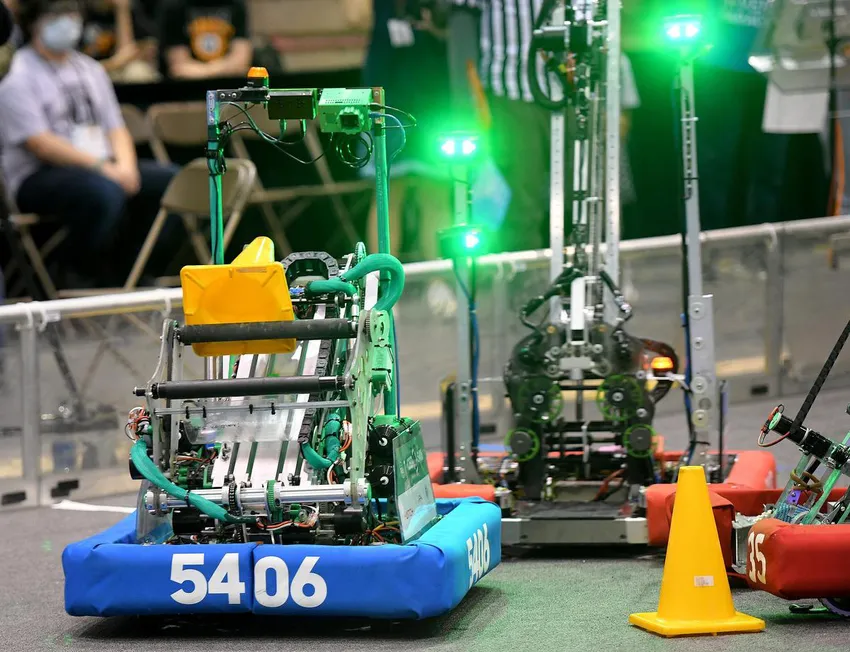
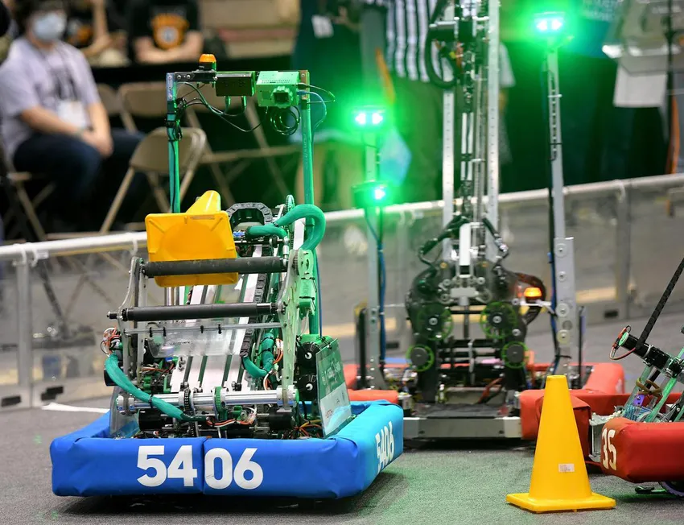
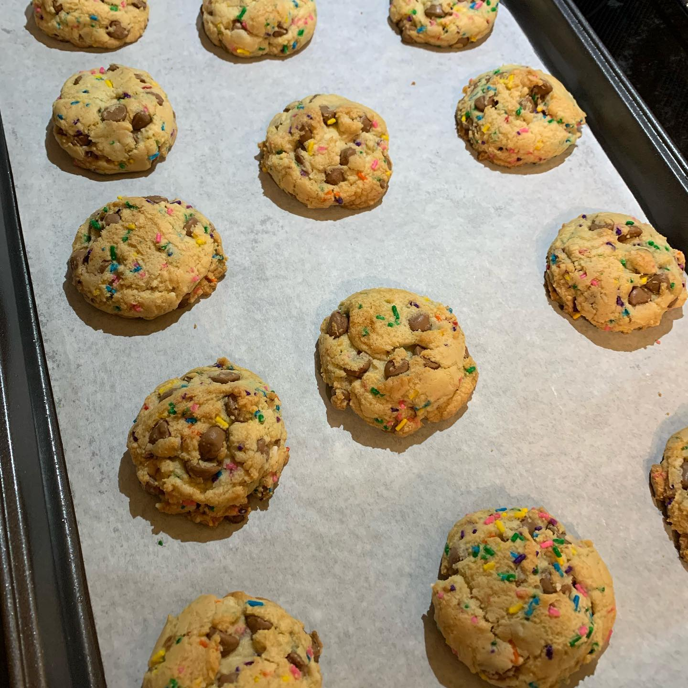
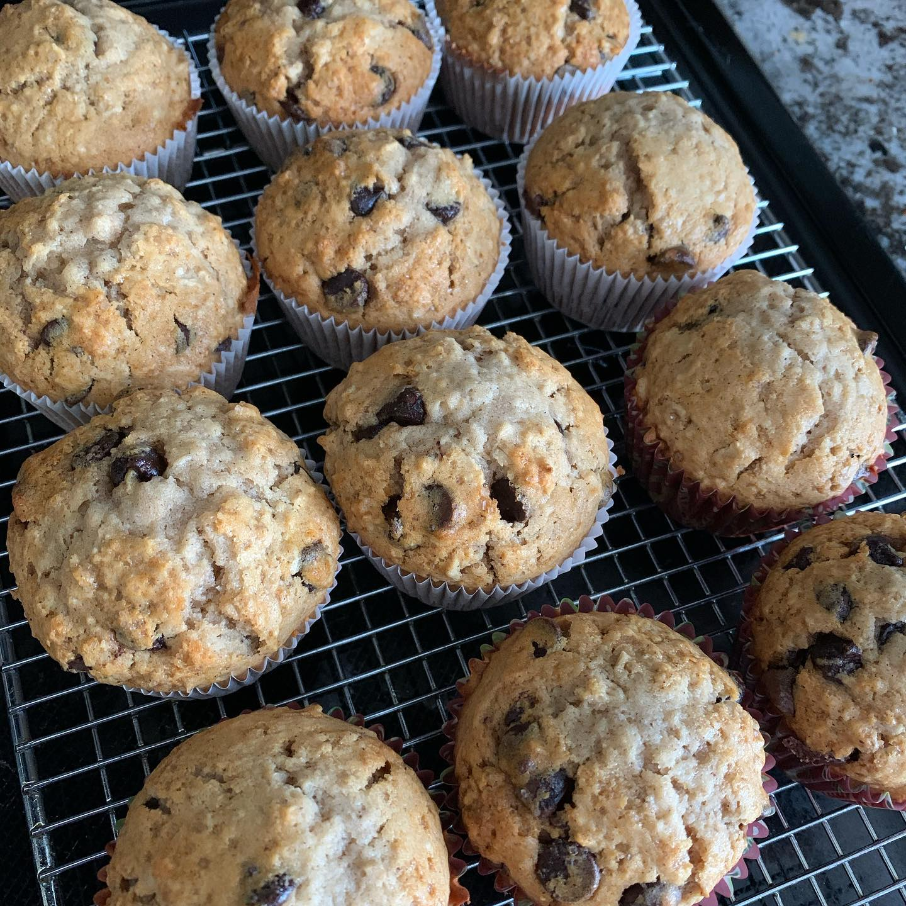
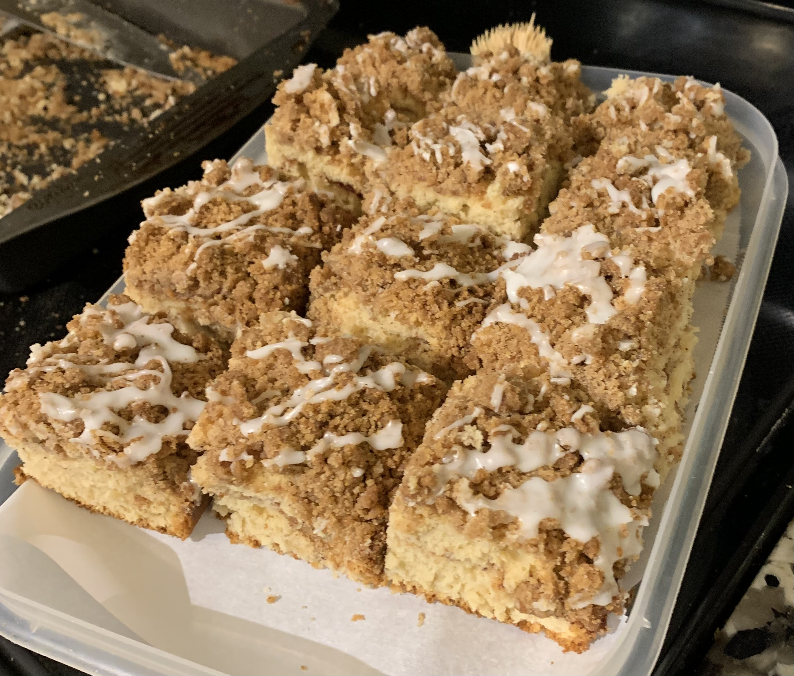

Interests
Robotics
I've been apart of FIRST Robotics for 2 years now on Team 5406 Celt-X, and I've loved every second of it. It's actually the main reason I wanted to go to BR in the first place! I'm currently on Celt-X's subteam Programming, and I have been for 2 years. This year, I got the chance to work with AI a bit and my main project was our object detection for cones and cubes.
This year, the game involved placing cones and cubes onto a grid, so we decided it would be beneficial to be able to detect the cones and cubes automatically. This led us to us eventually using an OrangePi to train an AI a model full of hundreds of images of cones and cubes in different lighting, positions etc, and through that training, the AI then knew what cones and cubes looked like, and could then detect them. It essentially knows the characteristics of each object, so it doesn't just go off of colour, making it far more accurate. You can do this with virtually anything - a lot of the example models I played around with used everyday objects, people, cars, couches, you name it. Eventually we were able to feed it a live camera stream, and got it to draw a box around cones and cubes. After that, each box was assigned an id so we could track the objects as well as detect them.

Photos!
 



Reading List
I've read A LOT of books in my life time, so I've decided to do my best to list (most of) my favourites here:
- The Hunger Games + the prequel by Suzanne Collins
- The Lunar Chronicles by Marissa Meyer
- Renegades Trilogy by Marissa Meyer
- They Both Die at the End by Adam Silvera
- Divergent Trilogy by Veronica Roth
- Six of Crows Duology by Leigh Bardugo
- Islands at the End of the World Duology by Austin Aslan
- The Hitchhiker's Guide to the Galaxy by Douglas Adams
- The Caraval Trilogy by Stephanie Garber
- The Hazel Wood Duology by Melissa Albert
- Percy Jackson and the Olympians by Rick Riordan
- Magnus Chase and the Gods of Asgard Trilogy by Rick Riordan
- Dance of Thieves Duology by Mary E. Pearson
- Little Women by Louisa May Alcott
Baking
I honestly don't take enough photos, but here are some of the things I've made (left out are the churros, bagels, biscotti, a sponge cake, cookie cheesecake bites, and eclairs I've made):
Birthday Cake Cookies
Oatmeal Chocolate Chip Muffins
Cinnamon Streusel Coffee Cake
